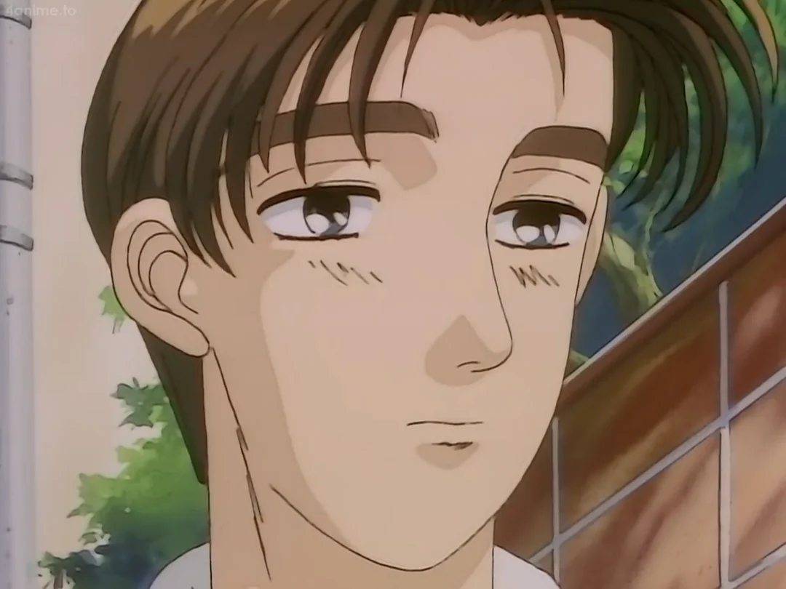
The legendary delivery boy of Mount Akina. Takumi serves as the Downhill Ace of Project D. He possesses an inhuman ability to control weight transfer, allowing him to maintain high speeds in corners where other cars lose traction. His signature 'Blind Attack' and 'Gutter Run' techniques are the backbone of the team's victory strategy.
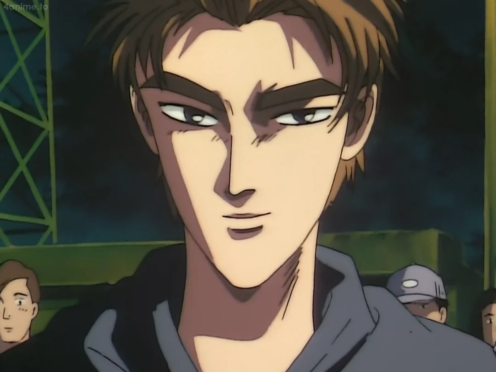
Project D's Uphill Ace. A high-instinct driver who relies on aggressive throttle control. Throughout the Kanto Expedition, Keisuke has refined his professional mindset, moving away from street-style recklessness toward surgical precision in tire management and acceleration.
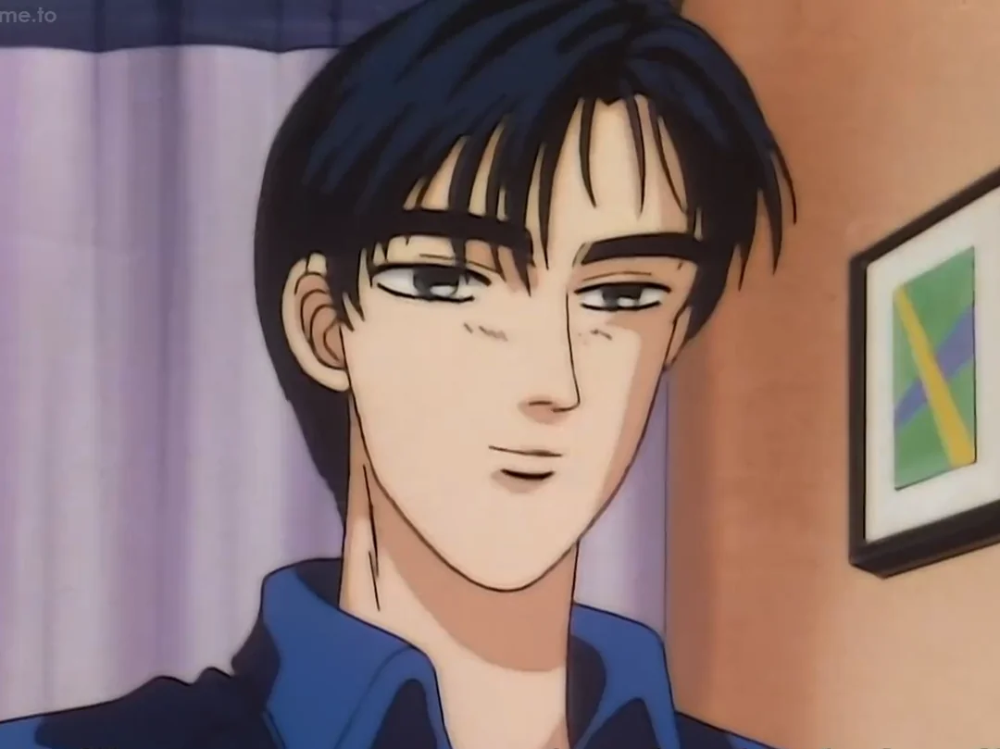
The architect of Project D. Ryosuke uses mathematical data and psychological analysis to predict the outcome of every race. He no longer races actively, focusing instead on coaching the 'Double Ace' to become the fastest drivers in all of Japan.
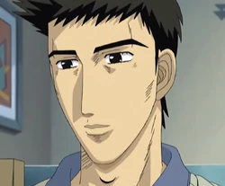
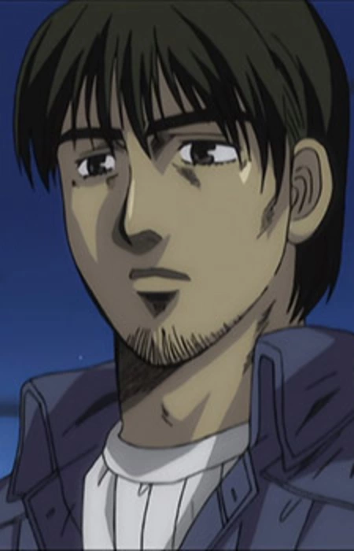
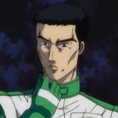
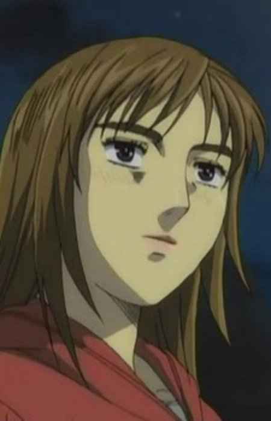
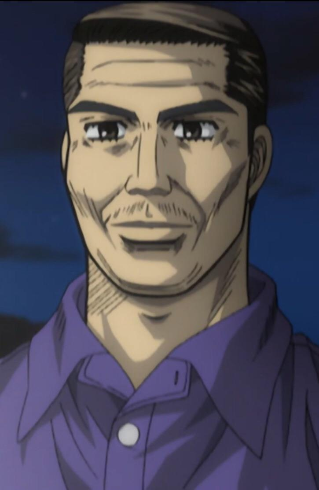
[ LOGS 5, 7-11 COMPLETED IN FULL ARCHIVE ]
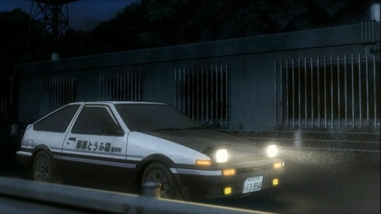
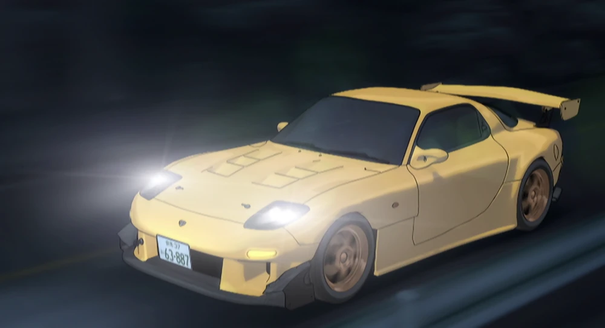
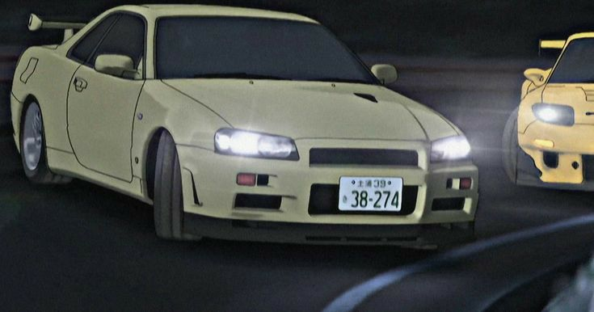